|
Feyenoord - Roda JC (0-0) 22 januari 2006
|
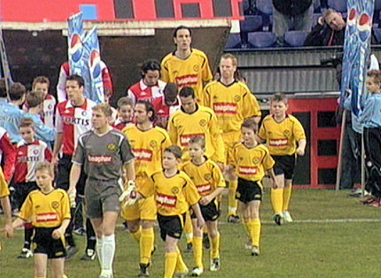
De derde ontmoeting met Feyenoord dit seizoen.
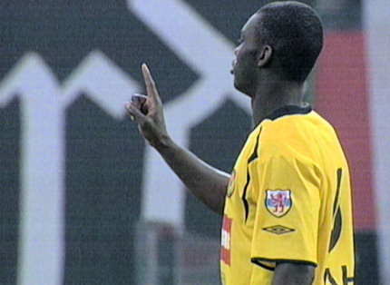
Een uitgestoken been van Kah voorkomt dat de naar het Rodadoel sprintende
Kuyt te gevaarlijk wordt. Het komt Kah op geel te staan.
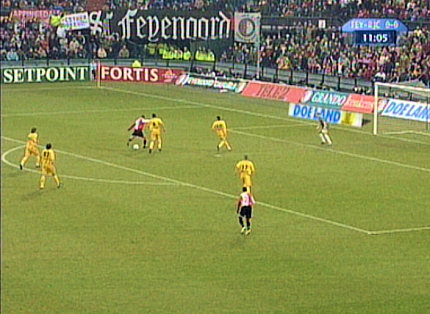
Een goede kans van Paauwe wordt geblokt door Vicelich waardoor de bal
hoog over het doel vliegt.
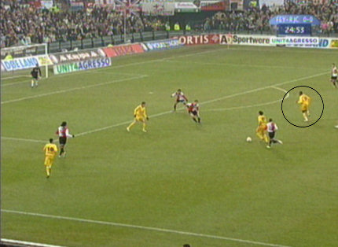
Bodor overziet de vrijstaande Cissé en speelt de bal op Oper.
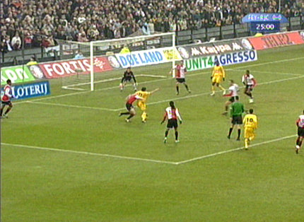
Via Oper krijgt Bodor de bal terug maar de Feyenoordverdediging ruimt op
voordat de Hongaar kan schieten.
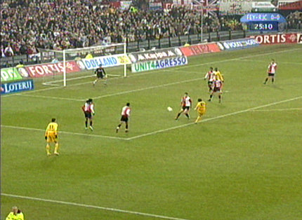
Na slecht uitverdedigen van Pardo komt Bodor andermaal in een kansrijke
positie. Zijn harde schot gaat naast het doel van Lodewijks.
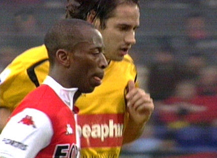
Even later is er weer een pegel op doel van Bodor nadat Vicelich de bal op
hem terug heeft gelegd. Deze keer gaat het schot een meter over het doel.
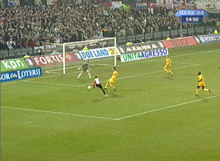
Schitterende redding van Kujovic op een keihard schot van Kalou.
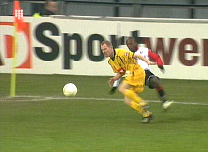
Castelen ontdoet zich van Lachambre en speelt naar Kuijt die wederom op
uitblinker Kujovic stuit.
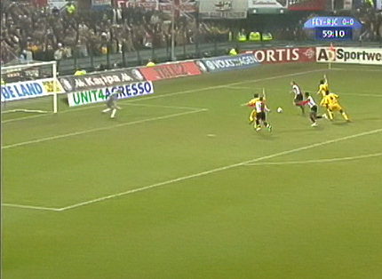
Kuijt op weg naar een buitenspel doelpunt. Het wordt terecht afgekeurd.
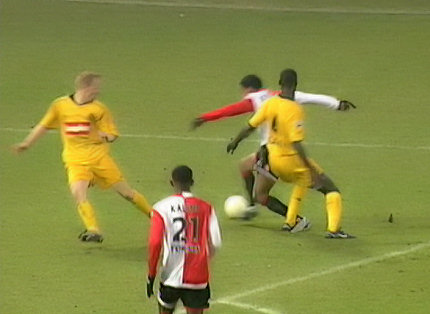
De voor Castelen ingevallen Biseswar zoekt het been van Kah en laat zich
opzichtig vallen. Scheids Luinge doorziet het en geeft geen strafschop.
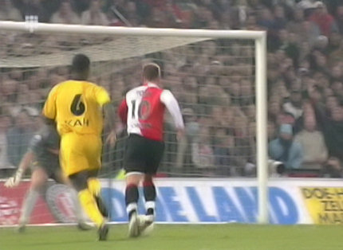
De slotfase is erg spannend. Hier komt Hofs vrij voor het doel, maar Kujovic
is vandaag niet te passeren.
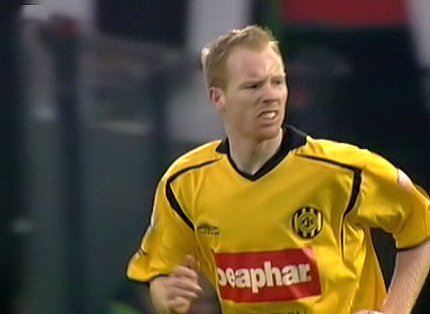
Lachambre die eerder in deze wedstrijd geel kreeg, ziet een hard schot in
de slotfase knap gered worden door doelman Lodewijks.
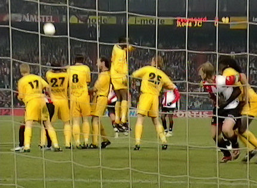
In de slotminuut is er een vrijetrap die genomen wordt door Hofs. Zijn schot
wordt weggestompt door Kujovic.
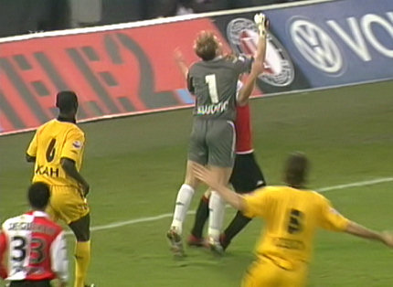
De doelman heeft daarop nog een "close encounter" met Kuijt. Het blijft
0-0.
Foto's vanuit Rotterdams perspectief:
www.ego2.nl
© Koempels Pleasure Dome
|